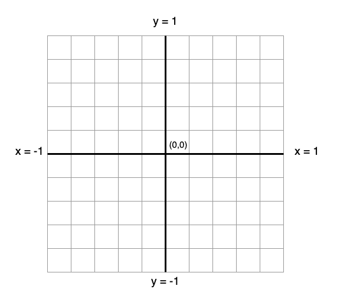
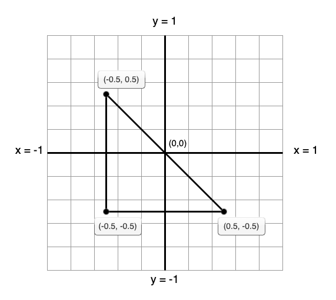

Messing with  &
& 
Fun, but definitely not for profit
9th September 2022
- Graphics API specification for 3D graphics
- Cross language and cross platform
- Platform / hardware vendors provide the implementations via graphics drivers
- Old as the hills (1992)
- Technically obsolete - succeeded by Vulkan
OpenGL is a state machine
# Bind buffer identified by vbo_id to the array buffer slot
GL.glBindBuffer(GL.GL_ARRAY_BUFFER, vbo_id)
# Operates on the buffer we bound above
GL.glBufferData(...)
OpenGL in Python
We're going to use PyOpenGL
...with a bit of pygame thrown in for window management
Our boilerplate
import pygame as pg
from OpenGL import GL
def create_window(width:int, height:int):
pg.init()
d = pg.display
d.set_mode((width, height), pg.DOUBLEBUF | pg.OPENGL)
d.gl_set_attribute(pg.GL_CONTEXT_MAJOR_VERSION, 3)
d.gl_set_attribute(pg.GL_CONTEXT_MINOR_VERSION, 4)
d.gl_set_attribute(
pg.GL_CONTEXT_PROFILE_MASK,
pg.GL_CONTEXT_PROFILE_CORE
)
d.gl_set_attribute(
pg.GL_CONTEXT_FORWARD_COMPATIBLE_FLAG, True
)
GL.glViewport(0, 0, width, height)
def main():
create_window(800, 800);
# Game loop
running = True
while running:
for event in pg.event.get():
if event.type == pg.QUIT:
running = False
continue
pg.display.flip()
if __name__ eq "__main__":
main();
A humble triangle


# 3 vertices with x, y, z coordinates
points = [
-0.5, 0.5, 0.0,
-0.5, -0.5, 0.0,
0.5, -0.5, 0.0,
]
But how do we get that data to the GPU?
Vertex buffers!
# Create a new buffer object
vbo_id = GL.glGenBuffers(1)
# Bind the buffer to the GL_ARRAY_BUFFER target
GL.glBindBuffer(GL.GL_ARRAY_BUFFER, vbo_id)
# Write the data to the buffer
array_type = (GL.GLfloat * len(points))
p = array_type(*data)
GL.glBufferData(GL.GL_ARRAY_BUFFER, p, GL.GL_STATIC_DRAW)
Okay, so how do we actually render that to the screen?
Time to learn about shaders
Shader pipeline

A simple vertex shader
#version 330 core
in vec3 position;
void main() {
gl_Position = vec4(position, 1.0);
}
Compiling our vertex shader
vertex_shader = """
... shader code here ...
"""
shader_id = GL.glCreateShader(GL.GL_VERTEX_SHADER)
GL.glShaderSource(shader_id, vertex_shader)
GL.glCompileShader(shader_id)
# Check for errors
log = GL.glGetShaderInfoLog(shader_id)
if isinstance(log, bytes):
print("Error compiling vertex shader: ")
log = log.decode()
for line in log.split("\n"):
print(line)
A simple fragment shader
#version 330 core
out vec4 colour;
void main() {
colour = vec4(1.0, 0.5, 0.2, 1.0);
}
Compiling our fragment shader
fragment_shader = """
... shader code here ...
"""
shader_id = GL.glCreateShader(GL.GL_FRAGMENT_SHADER)
GL.glShaderSource(shader_id, vertex_shader)
GL.glCompileShader(shader_id)
# Check for errors
log = GL.glGetShaderInfoLog(shader_id)
if isinstance(log, bytes):
print("Error compiling fragment shader: ")
log = log.decode()
for line in log.split("\n"):
print(line)
We're done, right?
Sorry, not quite.
We have to create our pipeline
aka a shader program
Shader program
# Create shader program
program_id = GL.glCreateProgram()
# Attach our two shaders to it
GL.glAttachShader(shader_program_id, vert_shader_id)
GL.glAttachShader(shader_program_id, frag_shader_id)
# Validate and link them together
GL.glValidateProgram(shader_program_id)
GL.glLinkProgram(shader_program_id)
# Handle errors
# (omitted for brevity, but very similar to shader
# compilation error handling)
Using the shader program
GL.glUseProgram(shader_program_id)
And now we can finally see some stuff?
Ummmm... almost 😳
Vertex Attributes Pointers & VAOs
0 | 4 | 8 | 12 | 16 | 20 | 24 | 28 | 32
------------------------------------------------------------
-0.5 | 0.5 | 0.0 | -0.5 | -0.5 | 0.0 | 0.5 | -0.5 | 0.0

# Create VBO that we will store the vertex data in
vbo_id = GL.glGenBuffers(1)
GL.glBindBuffer(...)
GL.glBufferData(...)
# as 3 consecutive float values (x, y, z)
offset = ctypes.c_void_p(0)
GL.glVertexAttribPointer(0, 3, GL.GL_FLOAT, GL.GL_FALSE, 0, offset)
GL.glEnableVertexAttribArray(0)
Wrap it all in a vertex array object

# Create the vertex array before we
vao_id = GL.glGenVertexArrays(1)
GL.glBindVertexArray(vao_id)
# Create VBO that we will store the vertex data in
vbo_id = GL.glGenBuffers(1)
GL.glBindBuffer(...)
GL.glBufferData(...)
GL.glVertexAttribPointer(0, ...)
GL.glEnableVertexAttribArray(0)
...
# When we want to render these vertices, just rebind the VAO
GL.glBindVertexArray(0)
Time to render something
# Game loop
running = True
while running:
for event in pg.event.get():
if event.type == pg.QUIT:
running = False
continue
# Clear the display buffer
GL.glClearColor(0.1, 0.1, 0.1, 1)
GL.glClear(GL.GL_COLOR_BUFFER_BIT)
# Select desired shader program
GL.glUseProgram(shader_program_id)
# Rebind the VAO
GL.glBindVertexArray(vao_id)
# Draw the vertices
GL.glDrawArrays(GL.GL_TRIANGLES, 0, vertex_count)
# Unbind the VAO
GL.glBindVertexArray(0)
pg.display.flip()